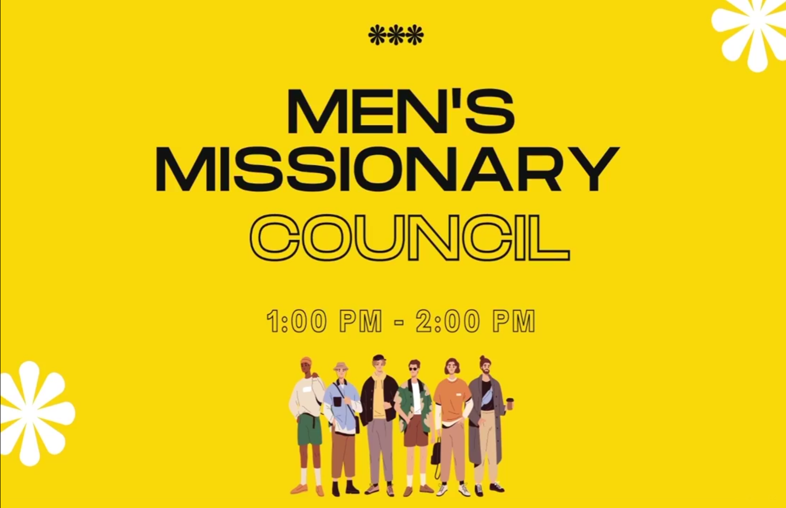
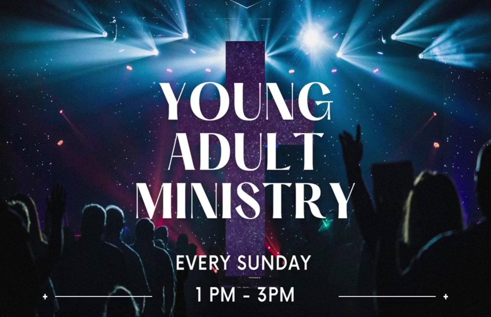

This council is focusing on engaging all women from the ages of 30 and up. We mentor the young women in developing their relationship with God, not just about God but also about the community that is part of this church.
Be part of the Women's Council. Look for Sis. Elsa Fiedelan and Ptr. Alicia Serrano.
This council is primarily interested in attracting men aged 30 and up. Also, to mentor the young men to develop their relationship and appreciate their love for God, not just for God but also for the other community that is part of this church.
Be part of the Men's Council. Look for Ptr. Josepino Jumawan and Bro. Danny Catimbuhan.


The purpose of the Youth Council is to encourage the youngsters to develop their relationships and place their trust in other people and in our beloved God. These kinds of opportunities will increase your skills and lead them in a good way to influence other communities.
Be a part of the Youth Council. Look for Sis. Abie Canedo and Bro. Lemuel Beato.
This ministry is focusing on making connections to guide the young in taking the steps to gather and make actions and decisions. Also, to more appreciate the love of God and reach out to our family and communities.
Be part of the Young Adult Ministry. Look for Sis. Esther Villar and Bro. Daniel Dela Llana.

The ministry will help to address their living needs and issues that they experience when they are together. The Young Couples Ministry will assist and guide them in preparing themselves for the new path of their life.
Come and join the Young Couples Missionary Council. Look for Sis. Roshel Lomboy.
The ministry is about appreciating them, spending time with them, and cherishing their time with the seniors. They give seniors the opportunity to share their professional gifts and talents, to encourage each other in their faith, and to be witnesses to their families.
Come and join the Senior Missionary Council. Look for Sis. Bhabes Madrid.

Every Sunday, the children will attend church for activities and programs that will help them develop their spiritual knowledge, communication skills, and leadership. This ministry will help them accept and learn about Jesus.
Be part of the Children's Ministry. Look for Sis. Emma Regulacion.
We offer the love and harmony that delivered the message to God through singing and worship. There are many ways to become part of this ministry by playing the instrument or singing and influencing everybody to become part of this ministry and community.
Be part of the Music Ministry. Look for Bro. Frank Lemual Beato and Bro. Francis Millard Cañedo.

We are the people that communicate and spread all the messages of God from different parts of the world by using different types of social media. We can deliver by using graphic images, PowerPoint presentations, and livestream.
Be part of the Media Ministry. Look for Bro. Carl Dematera and Sis. Cora Cañedo.
These people are focused on the dancing presentation, or interpretive dance, which is a type of art used to worship God's glory. Through the dancing, they can deliver the message of each verse and words with their hearts.
Be part of the Dance Ministry. Look for Sis. Ivy Batanes.